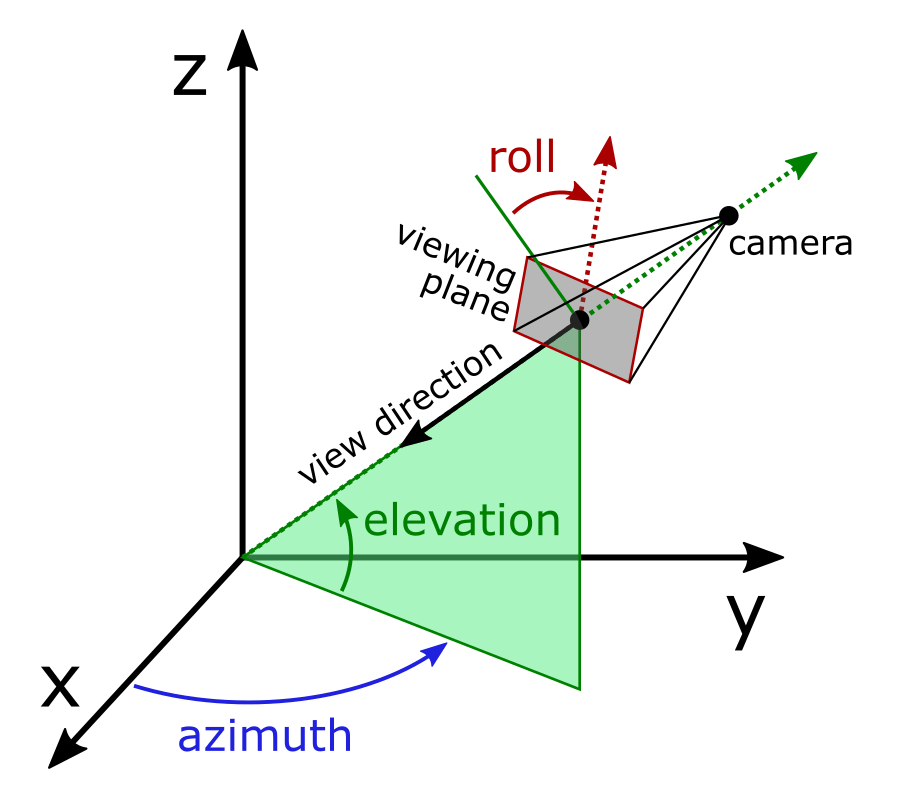
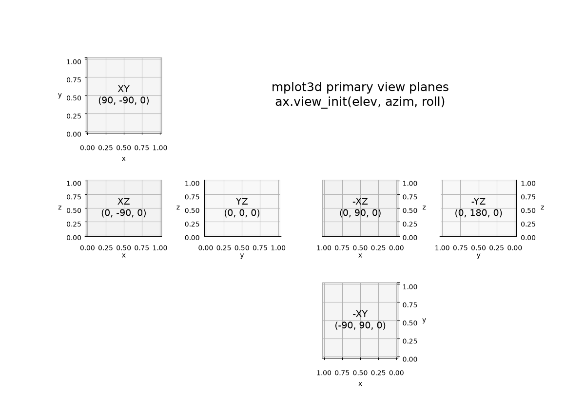

mplot3d View Angles#
How to define the view angle#
The position of the viewport "camera" in a 3D plot is defined by three angles: elevation, azimuth, and roll. From the resulting position, it always points towards the center of the plot box volume. The angle direction is a common convention, and is shared with PyVista and MATLAB. Note that a positive roll angle rotates the viewing plane clockwise, so the 3d axes will appear to rotate counter-clockwise.
{kind=link}

Rotating the plot using the mouse will control azimuth, elevation, as well as roll, and all three angles can be set programmatically:
import matplotlib.pyplot as plt
ax = plt.figure().add_subplot(projection='3d')
ax.view_init(elev=30, azim=45, roll=15)
Primary view planes#
To look directly at the primary view planes, the required elevation, azimuth,
and roll angles are shown in the diagram of an "unfolded" plot below. These are
further documented in the mplot3d.axes3d.Axes3D.view_init API.
(Source code, 2x.png, png)
{kind=link}
{kind=link}
{kind=link}

Rotation with mouse#
3D plots can be reoriented by dragging the mouse.
There are various ways to accomplish this; the style of mouse rotation
can be specified by setting rcParams["axes3d.mouserotationstyle"] (default: 'arcball'), see
Customizing Matplotlib with style sheets and rcParams.
Prior to v3.10, the 2D mouse position corresponded directly
to azimuth and elevation; this is also how it is done in MATLAB.
To keep it this way, set mouserotationstyle: azel.
This approach works fine for spherical coordinate plots, where the z axis is special;
however, it leads to a kind of 'gimbal lock' when looking down the z axis:
the plot reacts differently to mouse movement, dependent on the particular
orientation at hand. Also, 'roll' cannot be controlled.
As an alternative, there are various mouse rotation styles where the mouse
manipulates a virtual 'trackball'. In its simplest form (mouserotationstyle: trackball),
the trackball rotates around an in-plane axis perpendicular to the mouse motion
(it is as if there is a plate laying on the trackball; the plate itself is fixed
in orientation, but you can drag the plate with the mouse, thus rotating the ball).
This is more natural to work with than the azel style; however,
the plot cannot be easily rotated around the viewing direction - one has to
move the mouse in circles with a handedness opposite to the desired rotation,
counterintuitively.
A different variety of trackball rotates along the shortest arc on the virtual
sphere (mouserotationstyle: sphere). Rotating around the viewing direction
is straightforward with it: grab the ball near its edge instead of near the center.
Ken Shoemake's ARCBALL [Shoemake1992] is also available (mouserotationstyle: Shoemake);
it resembles the sphere style, but is free of hysteresis,
i.e., returning mouse to the original position
returns the figure to its original orientation; the rotation is independent
of the details of the path the mouse took, which could be desirable.
However, Shoemake's arcball rotates at twice the angular rate of the
mouse movement (it is quite noticeable, especially when adjusting roll),
and it lacks an obvious mechanical equivalent; arguably, the path-independent
rotation is not natural (however convenient), it could take some getting used to.
So it is a trade-off.
Henriksen et al. [Henriksen2002] provide an overview. In summary:
Style |
traditional [1] |
incl. roll [2] |
uniform [3] |
path independent [4] |
mechanical counterpart [5] |
azel |
✔️ |
❌ |
❌ |
✔️ |
✔️ |
trackball |
❌ |
✓ [6] |
✔️ |
❌ |
✔️ |
sphere |
❌ |
✔️ |
✔️ |
❌ |
✔️ |
arcball |
❌ |
✔️ |
✔️ |
✔️ |
❌ |
You can try out one of the various mouse rotation styles using:
import matplotlib as mpl
mpl.rcParams['axes3d.mouserotationstyle'] = 'trackball' # 'azel', 'trackball', 'sphere', or 'arcball'
import numpy as np
import matplotlib.pyplot as plt
from matplotlib import cm
ax = plt.figure().add_subplot(projection='3d')
X = np.arange(-5, 5, 0.25)
Y = np.arange(-5, 5, 0.25)
X, Y = np.meshgrid(X, Y)
R = np.sqrt(X**2 + Y**2)
Z = np.sin(R)
surf = ax.plot_surface(X, Y, Z, cmap=cm.coolwarm,
linewidth=0, antialiased=False)
plt.show()
Alternatively, create a file matplotlibrc, with contents:
axes3d.mouserotationstyle: trackball
(or any of the other styles, instead of trackball), and then run any of
the 3D plotting examples.
The size of the virtual trackball, sphere, or arcball can be adjusted
by setting rcParams["axes3d.trackballsize"] (default: 0.667). This specifies how much
mouse motion is needed to obtain a given rotation angle (when near the center),
and it controls where the edge of the sphere or arcball is (how far from
the center, hence how close to the plot edge).
The size is specified in units of the Axes bounding box,
i.e., to make the arcball span the whole bounding box, set it to 1.
A size of about 2/3 appears to work reasonably well; this is the default.
Both arcballs (mouserotationstyle: sphere and
mouserotationstyle: arcball) have a noticeable edge; the edge can be made
less abrupt by specifying a border width, rcParams["axes3d.trackballborder"] (default: 0.2).
This works somewhat like Gavin Bell's arcball, which was
originally written for OpenGL [Bell1988], and is used in Blender and Meshlab.
Bell's arcball extends the arcball's spherical control surface with a hyperbola;
the two are smoothly joined. However, the hyperbola extends all the way beyond
the edge of the plot. In the mplot3d sphere and arcball style, the border extends
to a radius trackballsize/2 + trackballborder.
Beyond the border, the style works like the original: it controls roll only.
A border width of about 0.2 appears to work well; this is the default.
To obtain the original Shoemake's arcball with a sharp border,
set the border width to 0.
For an extended border similar to Bell's arcball, where the transition from
the arcball to the border occurs at 45°, set the border width to
\(\sqrt 2 \approx 1.414\).
The border is a circular arc, wrapped around the arcball sphere cylindrically
(like a doughnut), joined smoothly to the sphere, much like Bell's hyperbola.
Ken Shoemake, "ARCBALL: A user interface for specifying three-dimensional rotation using a mouse", in Proceedings of Graphics Interface '92, 1992, pp. 151-156, https://doi.org/10.20380/GI1992.18
Gavin Bell, in the examples included with the GLUT (OpenGL Utility Toolkit) library, markkilgard/glut
Knud Henriksen, Jon Sporring, Kasper Hornbæk, "Virtual Trackballs Revisited", in IEEE Transactions on Visualization and Computer Graphics, Volume 10, Issue 2, March-April 2004, pp. 206-216, https://doi.org/10.1109/TVCG.2004.1260772 [full-text];